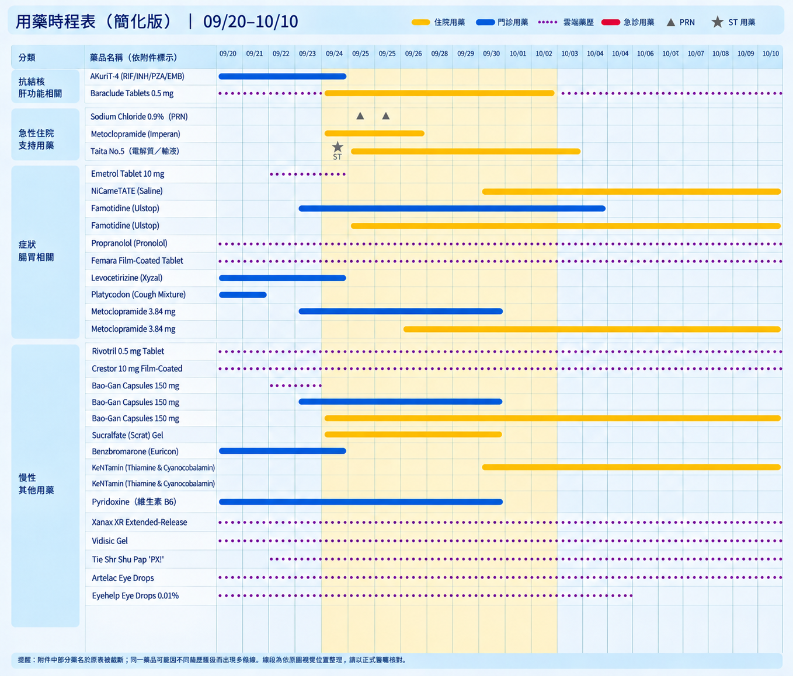

59歲女性 / 乳癌病史 / 結核病用藥後急性肝炎與神經學病變
病史與處置：患者因發現右肺上葉 (RUL) 結節入院。進行了支氣管鏡及 CT 導引下切片，病理報告顯示壞死性肉芽腫發炎且 Acid-fast 染色陽性，確診為肺結核 (Mycobacterial infection)。
對第二次住院的影響：因確診結核病，患者於 8/7 開始服用抗結核藥物 AKuriT-4 (RIF/INH/PZA/EMB)，並預防性給予 Pyridoxine。乳癌標靶藥物 Palbociclib 暫停。抗結核藥物中的 INH, RIF, PZA 具高度肝毒性，成為導致第二次住院 (9/24 急性肝炎/DILI) 的直接原因。
| 藥物名稱 (適應症) | 8/7 - 9/23 (門診) | 9/24 - 10/2 (住院) | 10/2 之後 (出院) |
|---|---|---|---|
| AKuriT-4 (抗結核) | 使用中 (DILI主因) |
立刻停用 | 停用 |
| Benzbromarone (降尿酸) | 使用中 | 立刻停用 | 停用 |
| Pyridoxine (B6, 神經) | 使用中 | 使用中 | 使用中 |
| Silymarin (保肝) | 無 | 開始使用 (治療肝炎) |
使用中 |
| Bao-Gan (保肝) | 無 | 開始使用 | 使用中 |
| Entecavir (抗B肝病毒) | 無 | 開始使用 (9/24起持續) |
使用中 |
| Metoclopramide (腸胃) | 無 | 9/24 - 9/26 短期使用 | 停用 |
| Sucralfate (胃黏膜保護) | 無 | 症狀緩解使用 | 使用中 |
| Levocetirizine (抗組織胺) | 無 | 停用 | 停用 |
| NiCAmeTATE (神經循環) | 無 | 9/30 神內建議加入 | 使用中 |

⚠️ 預覽器無法讀取您的圖片
由於目前在線上預覽環境，無法載入您電腦裡的圖片。請將本網頁儲存/下載到電腦，並與您剛剛上傳的圖片 (需命名為 image_8.png) 放在同一個資料夾，用瀏覽器打開即可完美顯示！
註：圖中黃底區塊為住院期間 (9/24-10/2)，藍線為門診用藥，黃線為住院用藥，紫虛線為雲端藥歷。
根據 DynaMed，急性 DILI 診斷需排除其他肝病，並符合以下任一條件：
傷害分型 (R-ratio)： 本案 R-ratio > 5，屬於典型的 Hepatocellular (肝細胞損傷型)。
在 RUCAM 評分系統中，必須排除競爭性原因 (Competing causes) 才能確診 DILI。
患者於停藥後主訴右手痠麻及關節痛，照會神經內科進行以下檢查：
臨床關聯性： 抗結核藥物中的 INH (Isoniazid) 易導致周邊神經病變，雖然患者已預防性服用 Pyridoxine (B6)，但仍出現小纖維神經病變症狀。此外，患者之前使用的乳癌口服化療藥物 (Palbociclib) 也可能引發關節痛。神內給予末梢血管擴張劑 (NiCAmeTATE) 及綜合維他命 (Kentamin) 進行症狀治療。
患者因乳癌病史曾長期使用標靶藥物 (Palbociclib)，具備白血球偏低 (Neutropenia) 的基礎狀態。以下表格著重於第二次因急性肝炎 (DILI) 入院期間 (9/24 - 10/2) 對血液與生化數值的影響：
| 日期 (狀態) | WBC 正常: 3.04-8.54 |
Hb 正常: 12.0-16.0 |
Platelet 正常: 150-361 |
Mono. (%) 正常: 2.7-7.6 |
Eosin. (%) 正常: 0.2-7.3 |
INR 正常: 0.8-1.2 |
CRE 正常: 0.6-1.2 |
GGT 正常: 9-64 |
CRP 正常: <0.5 |
|---|---|---|---|---|---|---|---|---|---|
| 9/24 (DILI 入院 Day 1) | 3.43 | 13.5 | 156 | 14.6 | 0.0 | 1.19 | 0.4 | 209 | - |
| 9/30 (DILI 入院 Day 7) | 3.30 | 12.5 | 113 (偏低) | 8.8 | 0.0 | - | 0.5 | 289 | 1.02 |
| 10/07 (出院門診) | 3.27 | 12.8 | 113 (偏低) | 12.5 | 0.0 | - | 0.6 | 199 | - |